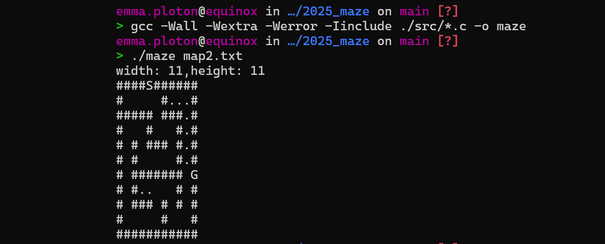

Maze
Le projet maze consistait à écrire un programme capable de résoudre
automatiquement un labyrinthe en tenant toujours la gauche.
Le programme lit une carte fournie en argument, parcourt le labyrinthe
et affiche le chemin trouvé. Il détecte également les labyrinthes
impossibles à résoudre ainsi que les cartes invalides. Ce projet m’a
permis d'apprendre à me déplacer dans un repère en 2D.

 Retour
Retour